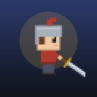

용사의 주간 계획표
할 일을 해치우면 용사가 강해지는 주간 계획표
방법 1 · 홈 화면에 추가 추천 · 설치 파일 없음
갤럭시·아이폰·PC 모두 돼요. 업데이트도 자동이에요.
게임 열기갤럭시 (크롬)
- 위 게임 열기를 눌러요.
- 아래에 "홈 화면에 앱으로 설치할까요?"가 뜨면 설치. 안 뜨면 오른쪽 위 ⋮ → 홈 화면에 추가 → 설치.
갤럭시 (삼성 인터넷)
- 게임을 연 뒤 아래 ≡ → 현재 페이지 추가 → 홈 화면.
아이폰 (사파리)
- 사파리로 게임을 열어요. (카톡 안 브라우저면 오른쪽 아래 ⋯ → 사파리로 열기)
- 아래 공유 버튼(□↑) → 홈 화면에 추가.
카톡에서 링크를 눌렀다면
카톡 안 브라우저에서는 설치가 안 돼요. 오른쪽 위(아이폰은 아래) ⋮ / ⋯ → 다른 브라우저로 열기로 크롬·사파리에서 열어 주세요.
방법 2 · 안드로이드 앱(APK)
'용사 RPG' 바로가기 아이콘이 따로 생기고, 인터넷이 없어도 켜져요.
APK 내려받기- 크롬에서 위 버튼을 눌러 받아요. (카톡·클로드 앱 안에서 받으면 안 열릴 수 있어요)
- 다운로드 알림이나 내 파일 → 다운로드에서
yongsa.apk를 눌러요. - "이 출처의 앱 설치를 허용하지 않음"이 뜨면 설정 → 이 출처 허용을 켜고 뒤로 가기.
- Play 프로텍트 창이 뜨면 세부정보 더보기 → 무시하고 설치(또는 그래도 설치). 플레이스토어에 올리지 않은 앱이라 뜨는 안내예요.
"앱이 설치되지 않았습니다"가 떠요
- 휴대폰 저장 공간이 부족한지 확인해요.
- 예전에 다른 곳에서 받은 같은 이름의 앱이 있으면 지우고 다시 설치해요. (지우기 전에 앱 안 설정 → 백업 코드 복사로 진행 상황을 챙겨 두세요. 카카오 로그인을 썼다면 서버에 저장돼 있어요.)
- 회사·학교 관리 폰은 설치가 막혀 있을 수 있어요. 그럴 땐 방법 1을 써 주세요.
카카오 로그인
처음 열면 카카오로 시작하기가 나와요. 로그인하면 폰·PC 어디서나 이어서 하고, 친구와 길드·레이드를 함께해요. 로그인 없이 혼자 해도 돼요.